Chap1: The Foundations: Logic and Proofs
约 3803 个字 26 张图片 预计阅读时间 13 分钟
1. Propositional Logic
1.1 Propositions
proposition(命题): A declarative sentence that is either true or false.
propositional variables(命题变量): Variables that represent propositions, usually letters like \(p,q,r,s\).
atomic proposition(原子命题): Propositions that cannot be expressed by simpler propositions.
compound proposition(复合命题): Propositions that formed from existing propositions using logical operators.
1.2 Logical Operators
1.2.1 Operators
negation(not, 否定): \(\neg p\).
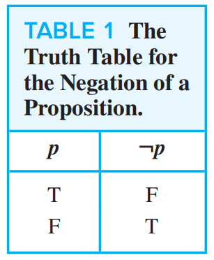
conjunction(and, 合取): \(p\wedge q\).
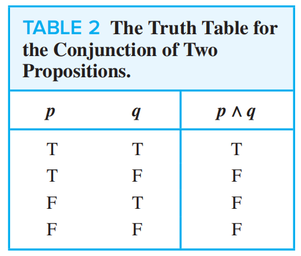
disjunction(inclusive or, 析取): \(p\vee q\).
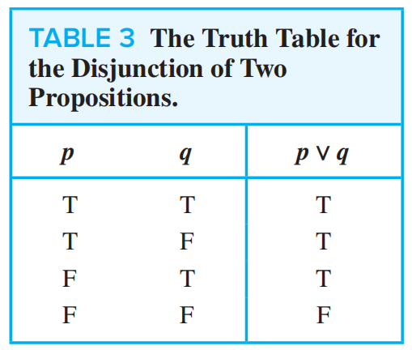
XOR(exclusive or, 异或): \(p\oplus q\).
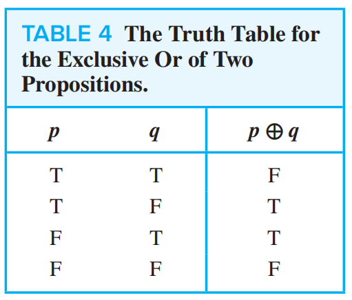
Supplement
NOR(not or, 或非): \(p \downarrow q \equiv \neg(p \vee q)\).
NAND(not and, 与非): \(p \mid q \equiv \neg(p \wedge q)\).
conditional statement(implication, 蕴含): \(p\to q\) .
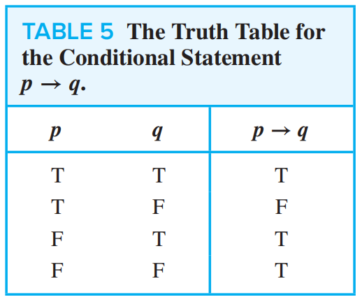
The statement p is called the hypothesis(假设), q is called the conclusion(结论).
Related Conditional Statements
- converse(逆命题): \(q\to p\)
- inverse(否命题): \(\neg p\to\neg q\)
- contrapositive(逆否命题): \(\neg q \to \neg p\)
Equivalent Forms in English
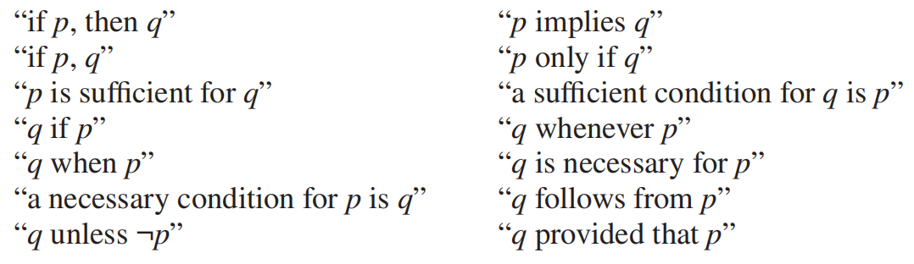
Implication Law: \(p\to q\equiv \neg p \vee q\)
biconditional(equivalence, 等价): \(p\leftrightarrow q\).
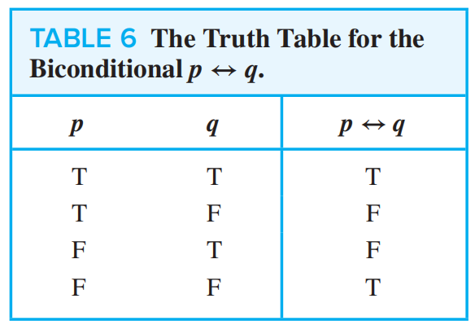
1.2.2 Precedence
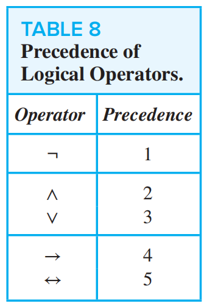
1.2.3 Bit Expression
bit: A binary digit 0 (false) or 1 (true).
boolean variable: A variable whose value is either true or false. A boolean variable can be represented by a bit.
bit string: A sequence of bits. The length of bit string is the number of bits.
bit operations: Logical operations used on bits. Bitwise operations are bit operations used on strings with same length and operate for their every bit.
- bitwise OR
- bitwise AND
- bitwise XOR
2. Applications of Propositional Logic
2.1 Translating English Sentences
- Identify atomic propositions and represent using propositional variables.
- Determine appropriate logical connectives.
2.2 System Specifications
consistency: A list of proposition is consistent if it is possible to assign truth values to the proposition variables so that each proposition is true.
2.3 Logical Circuit
Propositional logic can be applied to the design of computer hardware.
Logic circuit or digital circuit receives input signals and produces output signals.
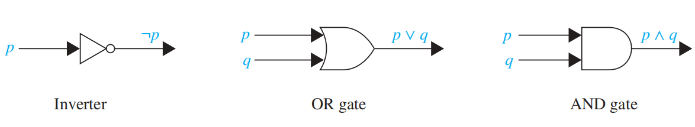
3. Propositional Equivalences
3.1 Logical Equivalences
tautology(永真式/重言式): A compound proposition that is always true.
contradiction(永假式/矛盾式): A compound proposition that is always false.
contingency(偶真式): A compound proposition that is neither a tautology nor a contradiction.
The compound propositions \(p\) and \(q\) are called logically equivalent if \(p\leftrightarrow q\) is a tautology, noted by \(p\equiv q\).
Important Logical Equivalences
Exclusive OR:
- \(p\oplus q\equiv(p\vee q)\wedge\neg(p \wedge q)\)
-
\(p\oplus q\equiv(p \wedge \neg q)\vee (\neg p\wedge q)\)
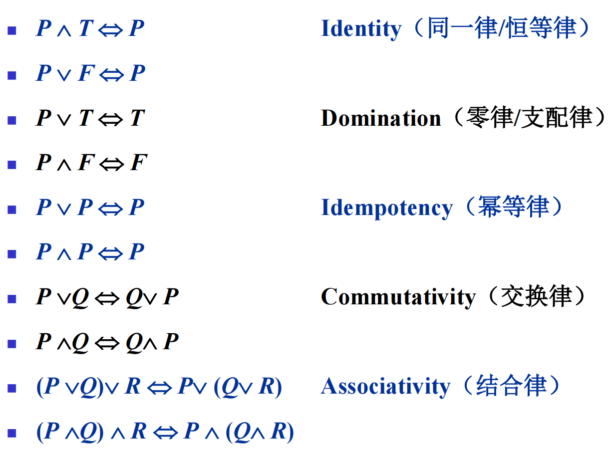
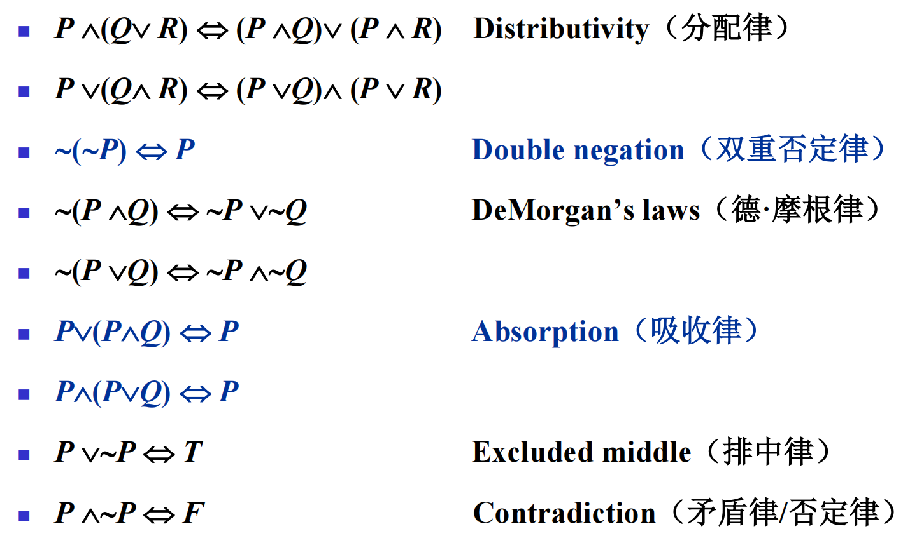
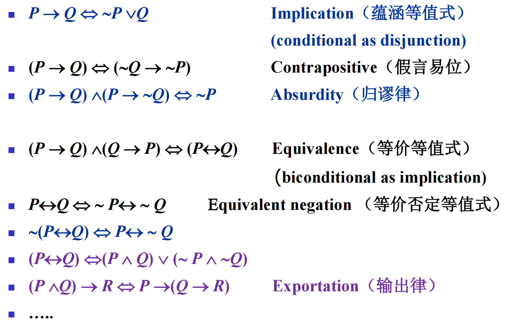
3.2 Using De Morgan’s Laws
De Morgan's Laws:
- \(\neg(p\wedge q)\equiv\neg p \vee \neg q\)
- \(\neg(p\vee q)\equiv\neg p \wedge \neg q\)
Extension:
- \(\neg(\bigvee_{i=1}^{n}p_{i})=\bigwedge_{i=1}^{n}\neg p_{i}\)
- \(\neg(\bigwedge_{i=1}^{n}p_{i})=\bigvee_{i=1}^{n}\neg p_{i}\)
3.3 Satisfiability
Satisfiability: A compound proposition is satisfiable if there is an assignment of truth values to its variables that makes it true (like consistency).
satisfiability = contingency + tautology
3.4 范式
简单析取式/基本和: 仅由有限个命题变元或其否定的析取构成的析取式．
- \(\neg P \vee Q \vee R\), \(\neg P \vee P\).
简单合取式/基本积: 仅由有限个命题变元或其否定的合取构成的合取式．
- \(\neg Q \wedge R \wedge Q\), \(\neg P \wedge P\).
析取范式/DNF(Disjunctive Normal Form): 由有限个简单合取式的析取构成的析取式．
- \(P\vee (P\wedge Q)\vee(\neg P\wedge \neg Q\wedge \neg R)\), \(P\vee Q\vee R\).
合取范式/CNF(Conjunctive Normal Form): 由有限个简单析取式的析取构成的合取式．
- \((P \vee Q) \wedge \neg Q \wedge (Q \vee \neg R \vee S)\), \(P \wedge Q \wedge R\).
范式存在性定理
任意一个命题公式均存在与之等值的析取范式和合取范式．
证明（构造法）:
- 利用蕴含等值式消去公式中的 \(\to\) 和 \(\leftrightarrow\)：
- \(P\to Q \equiv \neg P \vee Q\)．
- \(P\leftrightarrow Q \equiv (P\to Q)\wedge(Q \to P)\)．
- 利用德摩根律将公式中的 \(\neg\) 移到命题变元之前，用双重否定律消去两个连续的 \(\neg\)．
- 用分配律将公式化为基本积的析取（DNF）或基本和的合取（CNF）．
- 为了得到DNF，将 \(\wedge\) 分配给 \(\vee\)，使得最外层为 \(\vee\): \(P\wedge (Q \vee R)\equiv (P \wedge Q) \vee(P \wedge R)\)．
- 为了得到CNF, 将 \(\vee\) 分配给 \(\wedge\)，使得最外层为 \(\wedge\): \(P\vee (Q \wedge R)\equiv (P \vee Q) \wedge(P \vee R)\)．
问题在于，以这种方法得到的DNF/CNF不是唯一的．
3.4.1 主析取范式
极小项：\(n\) 个命题变项的极小项是这 \(n\) 个变元均出现一次的合取，并且保证每个变项或其否定二者仅出现一个．
例
公式中出现 \(P,Q,R\) 三个命题变项:
- \(P \wedge Q \wedge\neg R\) 是极小项.
- \(P \wedge Q\) 不是极小项，因为没出现 \(R\).
- \(P \wedge Q \wedge R \wedge \neg P\) 不是极小项，因为 \(P\) 出现两次.
对于每一个极小项 \(n\) 个变项的赋值中，只有一个赋值使其为真，其余 \(2^{n-1}\) 个赋值使其为假．
编码：若极小项对应赋值为 \(a_1a_2\cdots a_n\)（二进制数，为每一项的成真赋值），对应的十进制数为 \(k \in [0,2^n-1]\)，记作 \(m_{a_1a_2\cdots a_n}\) 或 \(m_k\)．
主析取范式（Principal DNF）: 若干不同的极小项组成的析取式．
- \((P\wedge Q)\vee(\neg P \wedge R)\) 是析取范式，但不是主析取范式．
- \((P \wedge Q \wedge \neg R)\vee(\neg P \wedge Q \wedge R)\) 是主析取范式，并且也是析取范式．
定理
命题公式的主析取范式是由赋值为真对应的极小项的析取组成的．
任何一个命题公式均存在一个与之等值的主析取范式，而且是唯一的．
如何构造主析取范式?
法一：真值表法
- 为命题公式构建真值表．
- 将每一个结果为真的行用极小项表示出来．
- 用析取连接极小项，即为主析取范式．
法二：等值演算法
- 将公式化为析取范式，并将一些矛盾式、永真式、重复项消去．
- 若析取范式的简单合取式项缺少命题变项（如 \(R\)），添加一个永真式（\(R \vee \neg R\)）然后用分配律打开．
- 用幂等律将重复的极小项删去（\(A \vee A \equiv A\)）．
3.4.2 主合取范式
极大项：\(n\) 个命题变项的极大项是这 \(n\) 个变元均出现一次的析取，并且保证每个变项或其否定二者仅出现一个．
对于每一个极大项 \(n\) 个变项的赋值中，只有一个赋值使其为假，其余 \(2^{n-1}\) 个赋值使其为真．
编码：若极小项对应赋值为 \(a_1a_2\cdots a_n\)（二进制数，为每一项的成假赋值），对应的十进制数为 \(k \in [0,2^n-1]\)，记作 \(M_{a_1a_2\cdots a_n}\) 或 \(M_k\)．
主合取范式（Principal CNF）：若干不同的极大项组成的合取式．
定理
命题公式的主合取范式是由赋值为假对应的极大项的合取组成的．
任何一个命题公式均存在一个与之等值的主合取范式，而且是唯一的．
如何构造 PCNF?
法一：真值表法
- 为命题公式构建真值表．
- 将每一个结果为假的行用极大项表示出来．
- 用合取连接极大项，即为主合取范式．
法二：等值演算法
- 将公式化为合取范式，并将一些矛盾式、永真式、重复项消去．
- 若合取范式的简单析取式项缺少命题变项（如 \(R\)），添加一个永假式（\(R \vee \neg R\)）然后用分配律打开．
- 用幂等律将重复的极大项删去（\(A \vee A \equiv A\)）．
总结：主析取范式和主合取范式都是求一个命题公式等价形式的方法．
主析取范式是将该命题公式所有为真的取值全部凑出来（极小项，一个极小项对应一个为真的取值）并析取；如果我们的赋值是原命题公式的成真赋值，那么一定可以对应让某一个极小项为真，从而主析取范式为真．
主合取范式是将该命题公式所有为假的取值全部凑出来（极大项，一个极大项对应一个为假的取值）并合取；如果我们的赋值是原命题的成真赋值，那么它不会让任何一个极大项为假，从而主合取范式为真；反之如果是原命题的成假赋值，其一定会对应一个极大项为假，从而主合取范式为假．
4. Predicates and Quantifiers
4.1 Predicates
predicate(谓词): Propositions which contain variables. When its variables bound by assigning it a value or an object from the domains of discourse(论域), predicates become propositions.
We can also regard predicate as propositional function. The result of applying a predicate \(P\) to a constant \(a\) is the proposition \(P(a)\), to a variable \(x\) is the proposition form \(P(x)\).
4.2 Quantifiers
universal quantifiers(全称量词): \(\forall\).
\(\forall xP(x)\) means: "For all \(x\), \(P(x)\)".
existential quantifiers(存在量词): \(\exists\).
\(\exists xP(x)\) means: "For some \(x\), \(P(x)\)".
uniqueness quantifiers(唯一存在量词): \(\exists!\).
\(\exists!xP(x)\) means: "There is one and only one \(x\) such that \(P(x)\)".
The uniqueness quantifier is not really need as it can be expressed with universal quantifiers and existential quantifiers:
\(\exists !xP(x)\equiv \exists x(P(x)\wedge \forall y(P(y)\to y=x))\).
If the domain of discourse is null, then
- \(\forall xP(x)\) is a tautology, because we can't find a counterexample.
- \(\exists xP(x)\) is a contradiction, because we can't find any \(x\) that satisfies \(P(x)\).
4.2.1 Quantifiers over Finite Domains
- \(\forall xP(x)=\bigwedge_{i=1}^{n}P(i)\).
- \(\exists xP(x)=\bigvee_{i=1}^{n}P(i)\).
4.2.2 Quantifiers with Restricted Domains
-
Universal Quantifier:
-
Rule: For a universal quantifier, a restricted domain is expressed using implication(\(\to\)).
-
Example: \(\forall x \in S, P(x)\equiv\forall x (x \in S \to P(x))\).
-
-
Existential Quantifier:
-
Rule: For an existential quantifier, a restricted domain is expressed using conjunction (\(\wedge\)).
-
Example: \(\exists x \in S, P(x)\equiv\exists x (x \in S \wedge P(x))\).
-
4.3 Property of Quantifiers
4.3.1 Binding Variables
-
When a quantifier is used on the variable \(x\), we say that this occurrence of the variable is bound.
-
An occurrence of a variable that is not bound by a quantifier or set equal to a particular value is said to be free.
4.3.2 Nesting of Quantifiers
The order of different quantifiers cannot be changed arbitrarily.
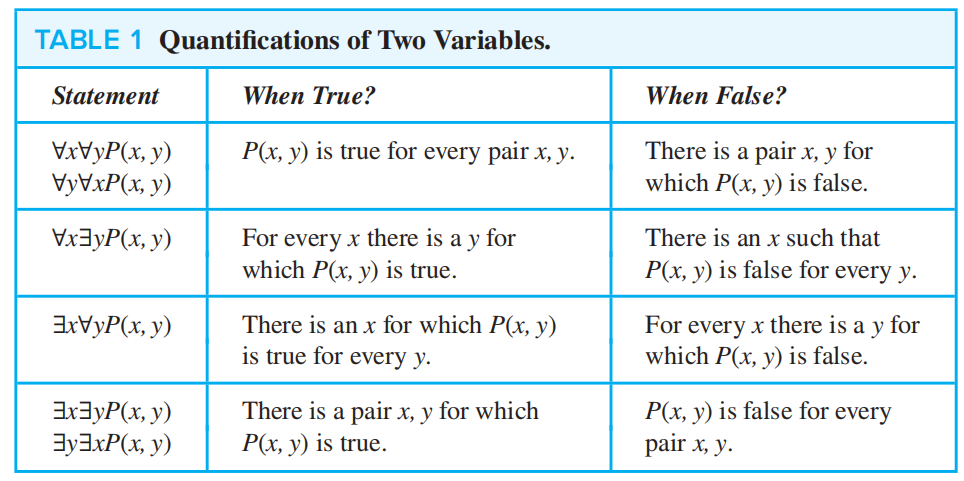
Example
Let \(P(x,y):y>x\).
- \(\forall x\exists yP(x,y)\): There isn't the biggest number.
- \(\exists y \forall xP(x,y)\): The biggest number exists. Changing the order of quantifiers completely changes the meaning of the proposition.
4.3.3 Logical Equivalences Involving Quantifiers
Statements involving predicates and quantifiers are logically equivalent iff they have the same truth value no matter which the predicates an the domain of discourse.
4.3.4 Negating Quantified Expressions
De Morgan's Laws for Quantifiers:
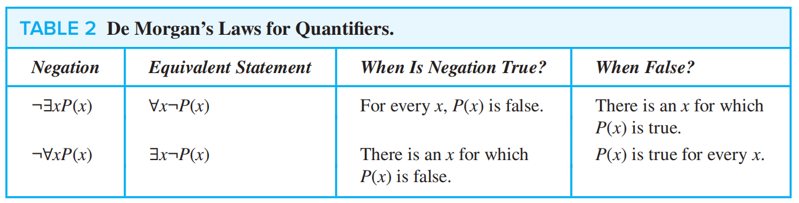
If there are more quantifiers, we can use De Morgan's Laws recursively:
4.3.5 Some Shorthands
- \(\exists x\exists y\exists z\,P(x,y,z) \leftrightarrow_{\text{def}}\exists xyz\,P(x,y,z)\).
- \(\forall x\forall y\forall z\,P(x,y,z) \leftrightarrow_{\text{def}}\forall xyz\,P(x,y,z)\).
4.4 一阶逻辑合式公式
4.4.1 相关概念
个体常项（Constant）：表示具体的特定对象，一般用 \(a,b,c\) 表示．
个体变项（Variable）：表示不确定的泛指对象，常与量词、谓词一起出现，一般用 \(x,y,z\) 表示．
项（Term）：个体常项、个体变项，以及以项为自变量的函数．
原子公式（Atomic Formula）：以项为自变量的谓词．
合式公式：原子公式，以及有限次利用原子公式和逻辑运算符（\(A\wedge B,A\vee B,A\to B\) 等）、量词与个体变项（\(\exists xA,\forall xA\) 等）规则形成的符号串．
4.4.2 量词辖域与变项
指导变项：紧跟在量词后的个体变项．
- \(\exists {\color{red}x}(F(x)\wedge\forall {\color{green}y}(G(y)\to H(x,y)))\)．
量词辖域：在 \(\exists xA,\forall xA\) 中，\(A\) 是量词的辖域（也就是指导变项后紧跟的整个括号内的内容）．
- \(\exists x{\color{red}F(x)}\wedge\forall y{\color{green}(G(y)\to H(x,y))}\)．
- \(\exists x\color{red}(F(x)\wedge\forall y(G(y)\to H(x,y)))\)．
约束出现：在辖域中与指导变项同名的变项．
- \(\exists {\color{red}x}(F({\color{red}x})\wedge\forall {\color{green}y}(G({\color{green}y})\to H({\color{red}x},{\color{green}y})))\)．
自由出现：既非指导变项又非约束出现．
- \(\forall y(G(y)\to H({\color{blue}x},y))\)．
闭式：无自由出现的变项．
- \(F(a),\exists xF(x)\) 是闭式．
- \(F(x),\forall y(G(y)\to H(x,y))\) 不是闭式．
4.5 一阶逻辑等值式
等值：\(A\Leftrightarrow B\)．\(A\Leftrightarrow B\) 当且仅当 \(A\leftrightarrow B\) 是永真式．如 \(\neg\forall xF(x) \Leftrightarrow \exists x \neg F(x)\)．
4.5.1 量词辖域收缩与扩张
假设 \(B\) 中不含 \(x\) 的出现：
析取/合取式直接提出/放入括号，不需要改变符号．
- \(\forall x(A(x)\vee B)\Leftrightarrow \forall xA(x)\vee B\)．
- \(\forall x(A(x)\wedge B)\Leftrightarrow \forall xA(x)\wedge B\)．
- \(\exists x(A(x)\vee B)\Leftrightarrow \exists xA(x)\vee B\)．
- \(\exists x(A(x)\wedge B)\Leftrightarrow \exists xA(x)\wedge B\)．
可以推出结论：\(\forall xP(x)\wedge \exists yQ(y) \Leftrightarrow \forall x \exists y(P(x)\wedge Q(y))\)．该结论对任意量词组合、合取析取均成立，也就是说合取析取式的原子命题变量如果无关，可以直接提出量词成为前束范式．事实上，由于换名规则，也可以推出 \(\forall xP(x)\wedge \exists xQ(x)\) 与上式等值．
蕴含式：若为前件则提出/放入括号时量词变号，若为后件则无需变号．
- \(\forall x(A(x)\to B)\Leftrightarrow \exists xA(x)\to B\)．
- \(\forall x(B\to A(x))\Leftrightarrow B\to\forall x A(x)\)．
- \(\exists x(A(x)\to B)\Leftrightarrow \forall xA(x)\to B\)．
- \(\exists x(B\to A(x))\Leftrightarrow B\to\exists x A(x)\)．
蕴含式的证明（以全称量词为例）
直观理解：对于所有 \(x\)，只要有 \(A(x)\) 就有 \(B\)，那么如果我存在一个满足 \(A(x)\) 的 \(x\)，我就一定能推出 \(B\)．
直观理解：对于所有 \(x\)，如果 \(B\) 满足了，它们都会满足 \(A\)，那么如果有条件 \(B\)，必然有所有 \(x\) 都满足 \(A(x)\)．
4.5.2 量词分配
全称量词对合取可分配，对析取单向推出：
- \(∀x(A(x)∧B(x))≡∀xA(x)∧∀xB(x)\)
- \(∀x(A(x)∨B(x))⇐∀xA(x)∨∀xB(x)\)
存在量词对析取可分配，对合取单向推出：
- \(∃x(A(x)∨B(x))≡∃xA(x)∨∃xB(x)\)
- \(∃x(A(x)∧B(x))⇒∃xA(x)∧∃xB(x)\)
蕴含式的量词分配：
- \(\forall xA(x)\to\exists xB(x) \Leftrightarrow \exists x(A(x)\to B(x))\)．
- \(\exists xA(x)\to\forall xB(x)\Rightarrow \forall x(A(x)\to B(x))\)．
- \(\forall x(A(x)\to B(x))\Rightarrow \forall xA(x)\to \forall xB(x)\)．
- \(\forall x(A(x)\leftrightarrow B(x))\Rightarrow \forall xA(x)\leftrightarrow \forall xB(x)\)．
4.5.3 换名规则
可以把某个指导变项和其量词辖域中所有同名的约束变项, 都换成新的个体变项符号；也可以把某个自由变项的所有出现, 都换成新的个体变项符号．
如：
- \(\forall xA(x)\wedge \forall xB(x)\Leftrightarrow \forall xA(x)\wedge \forall yB(y)\)．
- \(\forall xA(x)\wedge B(x) \Leftrightarrow \forall xA(x)∧B(y)\)
4.5.4 前束范式
前束范式：量词均在合式公式的开头，且它们的辖域延伸到整个公式末尾．
存在性定理：谓词逻辑合式公式均存在与之等值的前束范式．合式公式的前束范式是不唯一的．